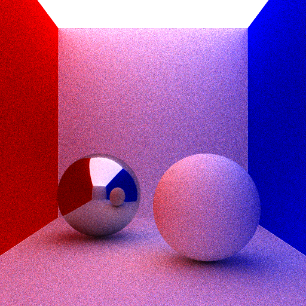
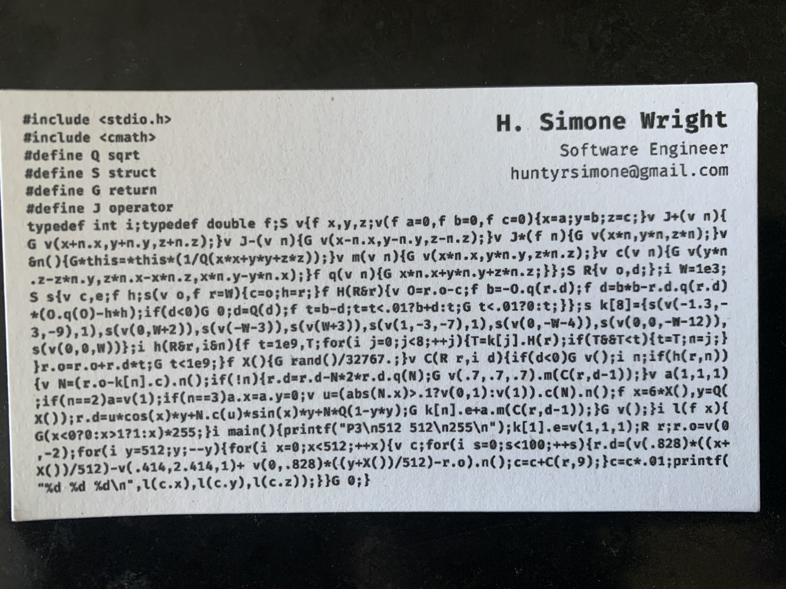

Business Card Path Tracer
Intro
This was my extra credit submission for a ray tracer assignment at my computer graphics course in college. I remembered seeing business card ray tracers online and I wanted to give it a shot. I started off by writing a simple path tracer, and then condensed the code so that it could fit on a standard 3.5 x 2 inch business card. After many, many hours and lots of hair pulling, I condensed my initial path tracer code into 1,444 characters. Kevin Beason's implementation of his pocket-sized path tracer smallPT really helped me with this project. I highly recommend checking out his article.
My Implementation
This implementation uses Monte Carlo integration to calculate the directions of secondary rays when they hit a lambertian (diffuse) surface.
I was only able to render spheres because it is the simplest primitive and required the least amount of code.
The walls, floor, and ceiling are gigantic spheres and the ceiling is the emmiter. Inside the Cornell Box is a lambertian sphere and a
metal sphere. I chose these materials because I thought they would better represent the capabilities of the path tracer, such as GI
and reflections. Plus they were the easiest to render with only a few lines of code.
Here is the code. You can run it with ./card > card.ppm to save the output in a .ppm file and view the final image with this ppm viewer website.
Just note that it is very slow since it is not multithreaded and runs on the CPU.
#include <stdio.h> #include <cmath> #define Q sqrt #define S struct #define G return #define J operator typedef int i;typedef double f;S v{f x,y,z;v(f a=0,f b=0,f c=0){x=a;y=b;z=c;}v J+(v n){ G v(x+n.x,y+n.y,z+n.z);}v J-(v n){G v(x-n.x,y-n.y,z-n.z);}v J*(f n){G v(x*n,y*n,z*n);}v &n(){G*this=*this*(1/Q(x*x+y*y+z*z));}v m(v n){G v(x*n.x,y*n.y,z*n.z);}v c(v n){G v(y*n .z-z*n.y,z*n.x-x*n.z,x*n.y-y*n.x);}f q(v n){G x*n.x+y*n.y+z*n.z;}};S R{v o,d;};i W=1e3; S s{v c,e;f h;s(v o,f r=W){c=o;h=r;}f H(R&r){v O=r.o-c;f b=-O.q(r.d);f d=b*b-r.d.q(r.d) *(O.q(O)-h*h);if(d<0)G 0;d=Q(d);f t=b-d;t=t<.01?b+d:t;G t<.01?0:t;}};s k[8]={s(v(-1.3,- 3,-9),1),s(v(0,W+2)),s(v(-W-3)),s(v(W+3)),s(v(1,-3,-7),1),s(v(0,-W-4)),s(v(0,0,-W-12)), s(v(0,0,W))};i h(R&r,i&n){f t=1e9,T;for(i j=0;j<8;++j){T=k[j].H(r);if(T&&T<t){t=T;n=j;} }r.o=r.o+r.d*t;G t<1e9;}f X(){G rand()/32767.;}v C(R r,i d){if(d<0)G v();i n;if(h(r,n)) {v N=(r.o-k[n].c).n();if(!n){r.d=r.d-N*2*r.d.q(N);G v(.7,.7,.7).m(C(r,d-1));}v a(1,1,1) ;if(n==2)a=v(1);if(n==3)a.x=a.y=0;v u=(abs(N.x)>.1?v(0,1):v(1)).c(N).n();f x=6*X(),y=Q( X());r.d=u*cos(x)*y+N.c(u)*sin(x)*y+N*Q(1-y*y);G k[n].e+a.m(C(r,d-1));}G v();}i l(f x){ G(x<0?0:x>1?1:x)*255;}i main(){printf("P3\n512 512\n255\n");k[1].e=v(1,1,1);R r;r.o=v(0 ,-2);for(i y=512;y;--y){for(i x=0;x<512;++x){v c;for(i s=0;s<100;++s){r.d=(v(.828)*((x+ X())/512)-v(.414,2.414,1)+ v(0,.828)*((y+X())/512)-r.o).n();c=c+C(r,9);}c=c*.01;printf( "%d %d %d\n",l(c.x),l(c.y),l(c.z));}}G 0;}Here is a closer look at function C, which finds and returns the color of each pixel. It is a recursive function that computes the radiance of a point x given by a viewing direction.
vec3 C(Ray r, int d) { if(d < 0) return vec3(); int n; if(hit(r, n)) { vec3 N = (r.origin - objects[n].center).normalize(); if(!n){ r.direction = r.direction - N*2*r.direction.dot(N); return vec3(.7,.7,.7).multiply( C(r, d-1) ); } vec3 a(1,1,1); if (n == 2) a = vec3(1); if (n == 3) a.x = a.y = 0; vec3 u = (abs(N.x) > .1 ? vec3(0,1) : vec3(1)).cross(N).normalize(); double x = 6 * random(), y = sqrt(random()); // 2 * PI rounds to 6 r.direction = u*cos(x)*y + N.cross(u)*sin(x)*y + N*sqrt(1-y*y); return objects[n].emission + a.multiply( C(r, d-1) ); } return vec3(); }The spheres are in an array and the hit function returns an index of the sphere n that has the closest intersection point. Depending on the index n, the function will use a color a to compute the final color of the pixel. If n == 0, the ray intersected the metal sphere, and the ray will be perfectly reflected about the surface normal N. If n == 2 the ray intersected the red wall and the color a will be red. If n == 3 the ray hit the blue wall and the color will be blue. If none of these are true then the color will be white and the ray will be reflected in a random direction. This will be done recursively for d times, then the final color will be set for that pixel.
The hit function H is fairly simple. It determines the closest sphere that a ray intersects with and returns the index of that sphere. In this particular scene, a ray is guaranteed to hit a sphere since the camera is inside of the box and the box has all 6 sides.  100 samples per pixel 500 samples per pixel  My gorgeous cards
This was a fun project. Maybe next time I'll implement a physically based ray tracer business card (ambitious, I know XD).